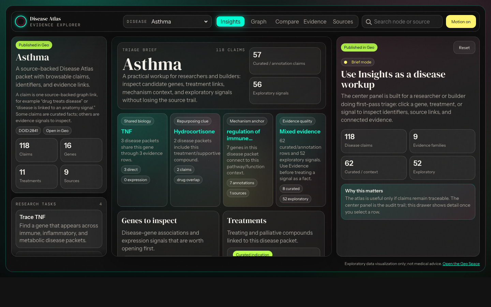
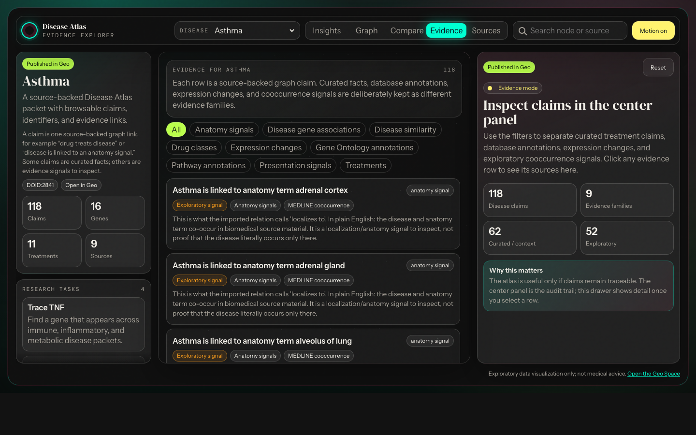

Start a disease workup.
Open one disease and quickly inspect associated genes, pathway context, treatments, expression changes, and exploratory symptom/anatomy signals.
Question answered: what should I investigate first?Geo Disease Atlas · Knowledge graph
Disease Atlas is for people doing early biomedical triage: researchers, pharma strategists, ontology builders, and app builders who need to move from a disease to genes, drugs, mechanisms, evidence, and source links without losing provenance.


Useful for
The dashboard is not meant to diagnose patients or replace clinical guidelines. It is meant to help someone decide what to inspect next, what looks connected, and whether a claim has a source trail worth trusting.
Open one disease and quickly inspect associated genes, pathway context, treatments, expression changes, and exploratory symptom/anatomy signals.
Question answered: what should I investigate first?Compare disease packets to find shared genes, overlapping treatments, drug classes, and mechanisms that might justify a deeper review.
Question answered: where are the interesting bridges?Click a claim, inspect its plain-English meaning, source family, identifiers, external links, and whether it is curated evidence or exploratory signal.
Question answered: can another builder reuse this safely?Knowledge graph
Instead of storing disease information as isolated tables or long summaries, the atlas stores each statement as a relationship: a drug treats a disease, a disease is associated with a gene, a gene participates in a pathway, or a source supports a claim.
That means you can click from a disease to a gene, from that gene to pathways and GO annotations, then back to the dataset, ontology, paper, or external identifier that supports the relationship.
The claim is inspectable, source-backed, and reusable. It is not just prose on a page.
Sources stay close to claimsEvidence rows link back to source databases, DOI/PubMed records, ontologies, and external pages where available.
The current atlas focuses on Asthma, Psoriasis, Rheumatoid arthritis, Breast cancer, Hypertension, Type 2 diabetes mellitus, Alzheimer’s disease, and Crohn’s disease.
Curated treatment and annotation claims are displayed separately from literature cooccurrence signals such as symptoms, anatomy, and disease similarity.
Drugs have DrugBank identifiers, genes have Entrez-style identifiers, papers have DOI/PubMed links, and source pages link out wherever the underlying data provides a useful URL.
Current coverage
This is a curated starter repertoire, not a bulk dump. The goal is to make the graph traceable and buildable before scaling to more diseases and more evidence layers.
Gene associations, expression signals, pathway context, and GO annotations.
Treating and palliative drug links, many with DrugBank IDs and external links.
Mechanism/class groupings that help compare treatment families.
Reactome-style pathway context for disease-associated genes.
Exploratory symptom/presentation evidence, kept separate from canonical clinical facts.
Literature/source-derived anatomy cooccurrence signals for exploration.
Datasets, ontologies, source databases, and supporting papers.
All currently linked with DOI and PubMed identifiers.
Dashboard
The dashboard opens separately so the landing page can explain the project while the app stays focused. Use Insights for a first-pass disease workup, Compare for shared biology, and Evidence for source audit.
Disease packets
The public site is the read model. Geo is the canonical space where the packet pages, entity pages, provenance, and future edits live.
Build on the atlas
The next step is improving source specificity and confidence cues: making it even clearer which claims are curated facts, which are exploratory signals, and which source records support each relationship.